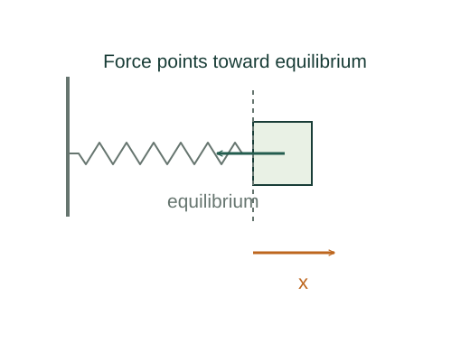

Derive simple harmonic motion from a spring
A restoring force proportional to displacement creates acceleration proportional to minus displacement. Sinusoids are the functions whose second derivatives have exactly that form.
What the symbols mean
A: amplitude; φ: phase set by initial conditions; k: spring constant; m: oscillating mass; ω: angular frequency.
When this applies
Ideal linear spring, constant mass, no damping or driving. Measure x from the equilibrium position.
Developing the argument

Combine the force model with Newton’s law
Hooke’s law supplies the restoring force and Newton’s law supplies its effect on motion.
Identify the differential equation
Divide by m and define ω² = k/m. The minus sign means acceleration points back toward equilibrium.
Verify the sinusoidal solution
Differentiate A cos(ωt + φ) twice. Its second derivative is −ω² times itself, so it satisfies the equation. A and φ remain to be set by initial position and velocity.
A closer lookWhat does a derivative mean physically? ↗Find the period
The phase advances by 2π during a complete cycle. Thus ωT = 2π, giving the period independently of amplitude in this linear model.
A worked example
For m = 0.50 kg and k = 200 N/m, ω = 20 rad/s and T ≈ 0.314 s. At amplitude 0.05 m the maximum speed is Aω = 1 m/s.
Derivation behind this calculation ↗A point to keep straight
Zero displacement means maximum speed, not zero acceleration and speed together. At a turning point speed is zero but acceleration is largest.
Check the assumptions and derivation ↗